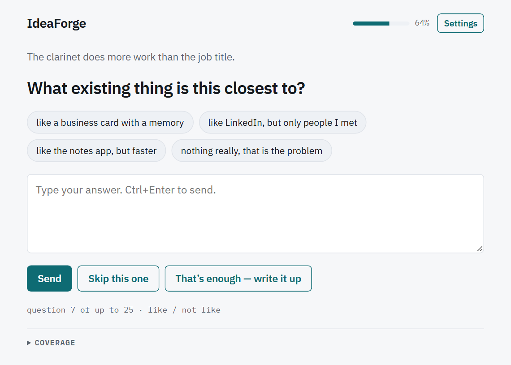

From a rough thought to a usable prompt
Ask the questions the idea still needs.
IdeaForge interviews you one question at a time, tracks what is still thin, and writes a Markdown prompt that carries your examples, constraints, preferences, open questions, and full transcript.

Private by design.
IdeaForge has no account, analytics, or application server. Model requests go
directly from your browser to the provider you choose. Sessions stay in your
browser until you export, share, or delete them.
Choose a path
Start your first interview
Pick a provider, answer the seed question, and understand the result.
Use it on a phone
Install the web app, dictate answers, or run a hands-free interview.
Keep and move your ideas
Search, tag, back up, import, download, and share saved conversations.
Choose a model provider
Compare hosted, local, and Claude-viewer paths without weakening privacy.
Run locally
Serve the static app, use Docker, connect Ollama, and validate real inference.
Contribute or operate it
Learn the architecture, tests, CI, Pages, release, and assistant workflows.
What the interview produces
- A refined prompt ready to paste into another model.
- The assumptions synthesis had to make.
- The decisions that remain open.
- A coverage table showing what is thin, partial, covered, waived, or deferred.
- The full verbatim transcript, including which answers were dictated.
What is documented here
This guide covers ordinary use, mobile installation, voice and hands-free mode, the Ideas library, providers, local models, Docker, privacy, troubleshooting, development, testing, Pages deployment, and releases. Deep implementation invariants remain in the repository references linked from Development and delivery.